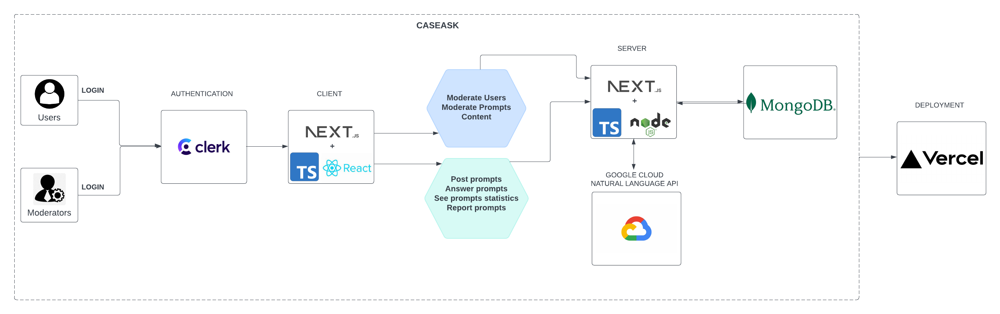

CaseAsk is a campus-wide, AI-moderated Q&A web application designed to help students ask and answer questions in a respectful, inclusive, and efficient learning environment. It features automatic content moderation using sentiment and language analysis, real-time updates, and user authentication.

Main Components:
git clone https://github.com/KhanhKhuat1504/csds393_project.git
cd csds393_project
npm install
Create a .env.local file and populate it with:
NEXT_PUBLIC_CLERK_PUBLISHABLE_KEY=your_clerk_key
CLERK_SECRET_KEY=your_clerk_secret
SIGNING_SECRET=your_webhook_secret
MONGODB_URI=your_mongodb_uri
GOOGLE_API_KEY=your_google_api_key
GCP_KEY_B64=your_google_api_key_in_base64
npm run dev
The application will be running at http://localhost:3000
Visit the site and sign up with CWRU email login.
Use the prompt to submit a post.
The system will auto-moderate using sentiment analysis.
Posts are displayed to the public feed if safe, or flagged otherwise.
Users can answer, or report questions.
CSDS393_PROJECT/
├── .next/ # Next.js build output (auto-generated)
├── node_modules/ # Installed dependencies
├── public/ # Static assets (e.g., images, icons)
├── src/ # Source code
│ ├── assets/ # Custom images, fonts, etc.
│ ├── components/ # Reusable UI components
│ ├── icons/ # SVG or icon-specific components
│ ├── lib/ # Utility functions (e.g., dbConnect)
│ ├── models/ # Mongoose/MongoDB schemas
│ ├── pages/ # Next.js pages and routes
│ │ ├── api/ # API route handlers (backend logic)
│ │ ├── components/ # Component-specific pages
│ │ ├── dashboard/ # Dashboard pages
│ │ ├── frontpage/ # Landing/homepage content
│ ├── styles/ # Tailwind/global CSS and modules
│ ├── tests/ # Unit tests
Frontend: Next.js, React, TypeScript
Backend: Node.js, REST API (via Next.js API Routes)
Database: MongoDB Atlas
Authentication: Clerk
Moderation: Google Cloud Natural Language API
Testing: Jest, React Testing Library
Deployment: Vercel
Other Tools: ESLint, Prettier, GitHub Actions (CI), JSDoc
Khanh: Clerk Auth, Backend, AI feature and Deployment
Evan: Clerk Auth, Frontend, Style, and Moderation
Ricky: Frontend and debug the frontend and Backend API
Tahir: Backend, and Database management
What Could Be Improved
This project uses Jest and React Testing Library for unit testing frontend components and backend API routes.
Run tests:
npm run test
Unit tests are located in the /tests directory.
Components tested:
User Authentication
Question Submission
Answer Submission
AI Moderation logic
Flagging/Inappropriate Post handling
Test Coverage We cover ~85% of major flows: posting, answering, flagging, and moderation.
Auth-related flows are tested using Clerk’s mocked responses.
All classes, functions, and modules include Google-style docstrings.
Documentation generated using JSDoc.
Generate docs:
npx jsdoc -c jsdoc.config.json
Generated HTML docs are located in:
/docs/html/index.html
This project is open-source and licensed under the MIT License.